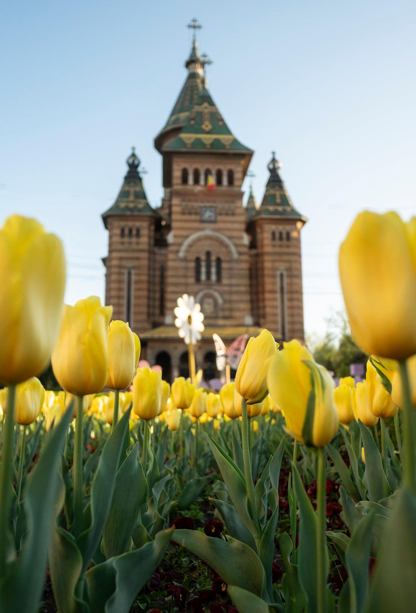
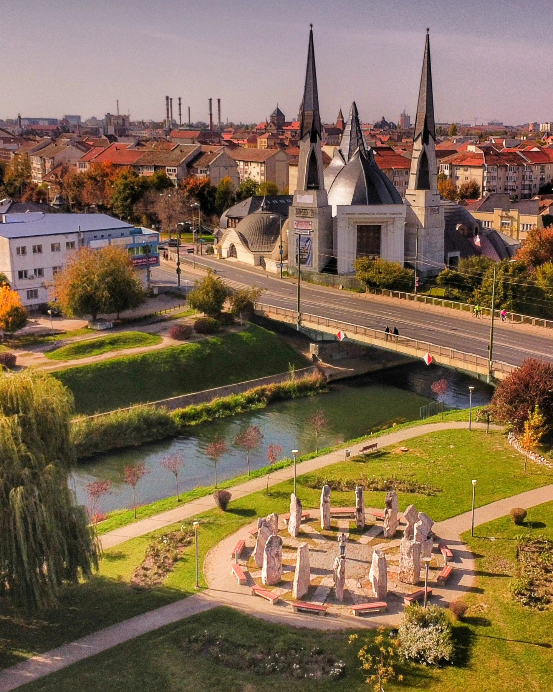

Top Activities
-

Orthodox Cathedral
It is one of the important buildings of the city, built between 1936-1946.
-

Union Square (Piața Unirii)
It is the oldest square in Timișoara. Here are the most important architectural styles.
-

Bega River
Bega was the first navigable canal in Romania. Ir is now the "green soul" of the city.
Your guide
I've lived in Timisoara for about 15 years, so I can show you the best parts and hidden secrets